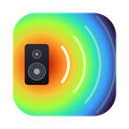
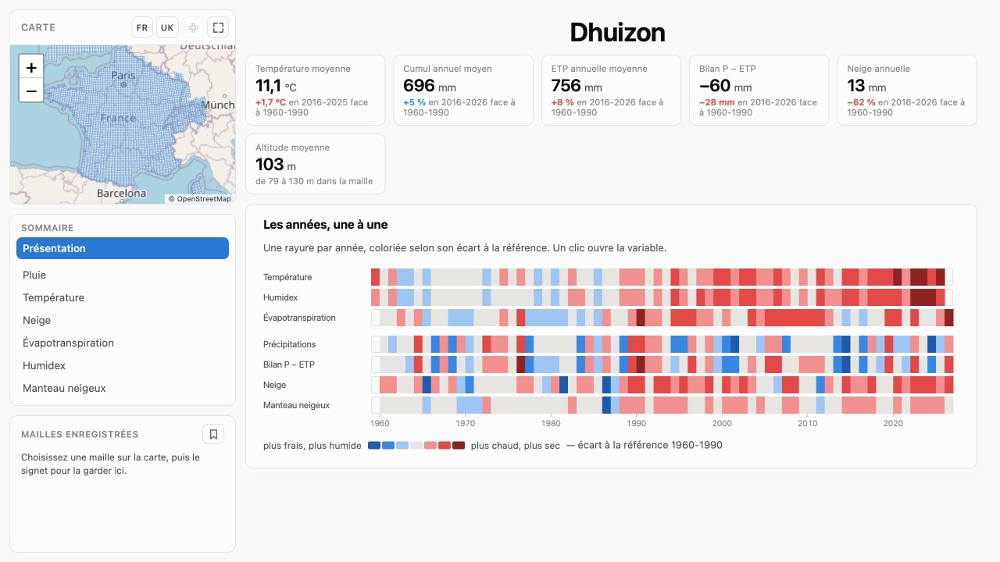
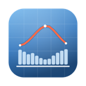
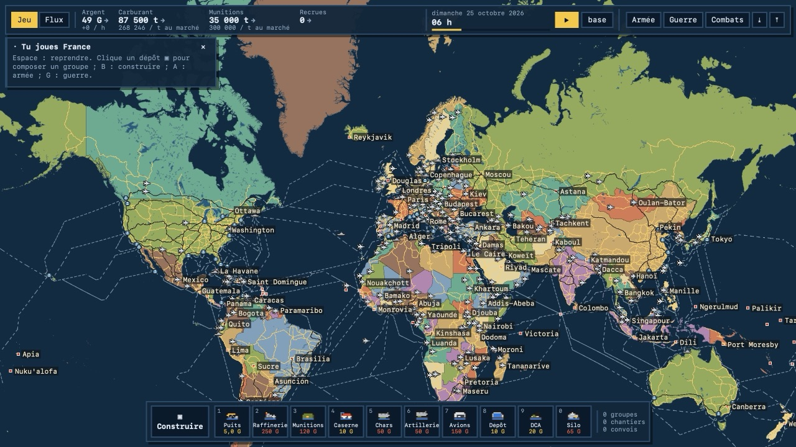
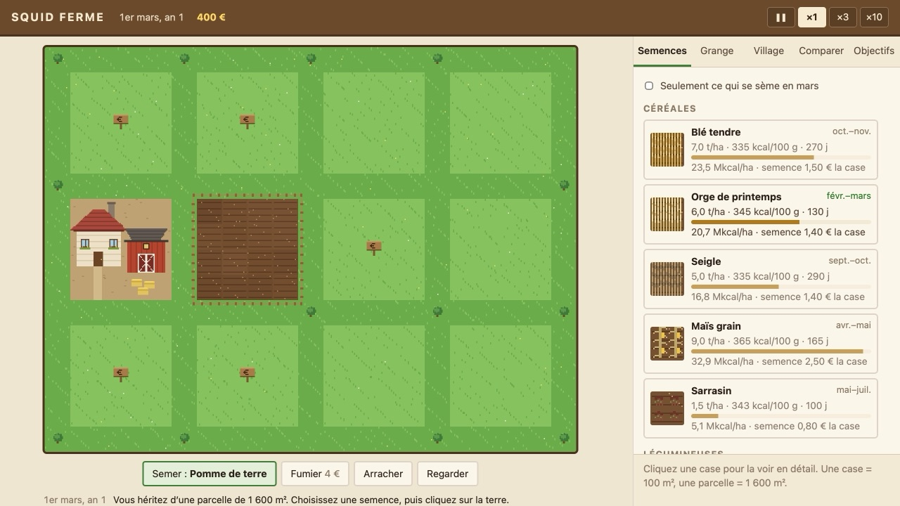
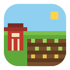

Squid

Acoustique
Des enceintes dans une pièce, en 3D : modes, interférences, court-circuit acoustique.
Dans le navigateur, sans rien installer. Les graves se calculent sur la carte graphique avec WebGPU : Chrome, Edge ou Safari récents ; ailleurs, seuls les aigus sont calculés.


Climat
Le climat réel de chaque maille de 8 km, jour par jour depuis 1959 (France et Royaume-Uni).

Squid Nations
Un pays à mener sur la planète entière : production, armée, guerre.


Squid Ferme
Une petite ferme en pixels, avec les rendements réels des cultures.